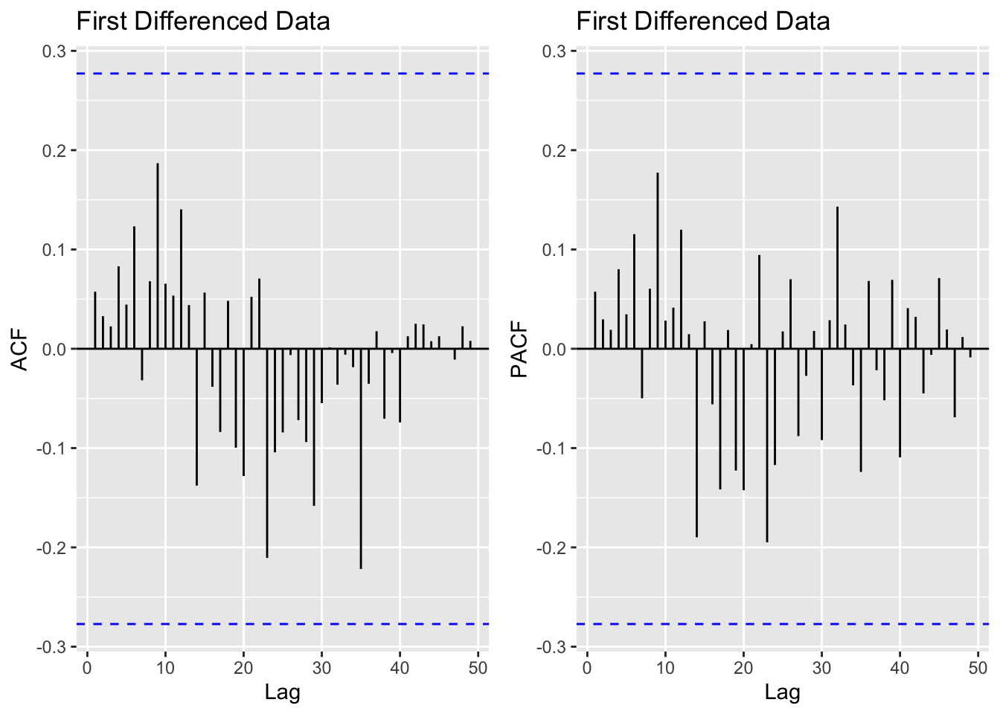
ARMA, ARIMA, and SARIMA Models
ARMA and ARIMA Models are used in time-series in order to forecast the time series object at had. Thus, we will take a look at both the globalization index, the stock fluctuation of HYBE Co., Korean tourism, and popularity between KPOP and Western artists in order to forecast values and make future predictions.
Globalization Index:
From our Exploratory Data Analysis, we noticed the following information:
- Prior to differencing, the ACF plot show several lags above the significance bands, indicating a non-stationary relationship.
- The Augmented Dickey-Fuller Test confirmed that the data itself was NOT stationary.
- First Differencing will be used since the data becomes stationary.
Thus, using this information, we will move on to creating the model:
Since the ACF plot doesn’t have any significant peaks, q = 0.
Since the PACF plot doesn’t have any significant peaks, p = 0.
Since we differenced once, d = 1.
Thus, we can easily view that the best model has values p=0, d=1, and q=0.
ARIMA Model
set.seed(123)
d=1
i=1
temp= data.frame()
ls=matrix(rep(NA,6*25),nrow=25) # roughly nrow = 5x2 (see below)
for (p in 0:4)# p=0,1,2,3,4 : 5
{
for(q in 0:4)# q=0,1,2,3,4 :5
{
model<- Arima(global_ts,order=c(p,d,q),include.drift=TRUE)
ls[i,]= c(p,d,q,model$aic,model$bic,model$aicc)
i=i+1
}
}
temp= as.data.frame(ls)
names(temp)= c("p","d","q","AIC","BIC","AICc")
#temp
knitr::kable(temp)| p | d | q | AIC | BIC | AICc |
|---|---|---|---|---|---|
| 0 | 1 | 0 | 104.3201 | 108.1441 | 104.5754 |
| 0 | 1 | 1 | 106.1513 | 111.8874 | 106.6730 |
| 0 | 1 | 2 | 108.1031 | 115.7512 | 108.9920 |
| 0 | 1 | 3 | 110.0940 | 119.6541 | 111.4576 |
| 0 | 1 | 4 | 111.7783 | 123.2504 | 113.7318 |
| 1 | 1 | 0 | 106.1397 | 111.8758 | 106.6615 |
| 1 | 1 | 1 | 107.1777 | 114.8258 | 108.0666 |
| 1 | 1 | 2 | 109.1339 | 118.6940 | 110.4975 |
| 1 | 1 | 3 | 110.8985 | 122.3706 | 112.8519 |
| 1 | 1 | 4 | 112.3139 | 125.6981 | 114.9806 |
| 2 | 1 | 0 | 108.0883 | 115.7364 | 108.9772 |
| 2 | 1 | 1 | 109.9835 | 119.5436 | 111.3471 |
| 2 | 1 | 2 | 111.0559 | 122.5280 | 113.0094 |
| 2 | 1 | 3 | 110.6545 | 124.0386 | 113.3211 |
| 2 | 1 | 4 | 114.3509 | 129.6471 | 117.8631 |
| 3 | 1 | 0 | 110.0612 | 119.6213 | 111.4248 |
| 3 | 1 | 1 | 110.9697 | 122.4419 | 112.9232 |
| 3 | 1 | 2 | 108.9725 | 122.3566 | 111.6391 |
| 3 | 1 | 3 | 112.2628 | 127.5589 | 115.7749 |
| 3 | 1 | 4 | 112.7589 | 129.9671 | 117.2589 |
| 4 | 1 | 0 | 111.6849 | 123.1570 | 113.6384 |
| 4 | 1 | 1 | 112.6429 | 126.0271 | 115.3096 |
| 4 | 1 | 2 | 114.5878 | 129.8839 | 118.0999 |
| 4 | 1 | 3 | 112.6720 | 129.8802 | 117.1720 |
| 4 | 1 | 4 | 114.3036 | 133.4238 | 119.9446 |
[1] "AIC:" p d q AIC BIC AICc
1 0 1 0 104.3201 108.1441 104.5754[1] "BIC:" p d q AIC BIC AICc
1 0 1 0 104.3201 108.1441 104.5754[1] "AICc:" p d q AIC BIC AICc
1 0 1 0 104.3201 108.1441 104.5754From the results of the sarima() function, we call say that the equation is as follows:
\[\begin{align} x_{t} = w_{t} -1w_{t-1} + 0.4805 \end{align}\]
From the model diagonotics presented, we can also say that the ACF plot of residuals shows no significance, meaning the residuals are not correlated. Additionally, the p-values of the Ljung-Box statistic is much higher than the significance band, meaning that we fail to reject the null hypothesis and can say that the model is not autocorrelated.
Code
sarima(global_ts, 0, 1, 0)initial value -0.415738
iter 1 value -0.415738
final value -0.415738
converged
initial value -0.415738
iter 1 value -0.415738
final value -0.415738
converged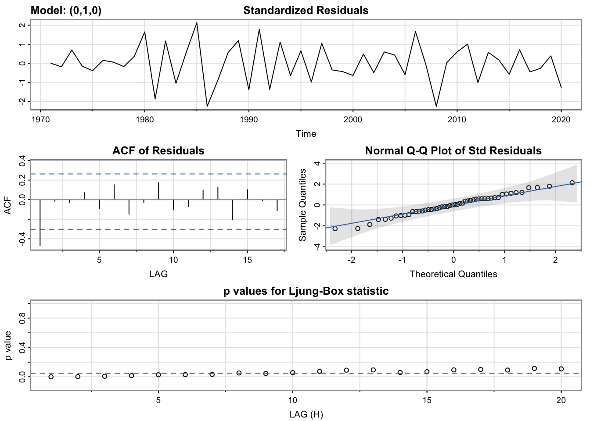
$fit
Call:
arima(x = xdata, order = c(p, d, q), seasonal = list(order = c(P, D, Q), period = S),
xreg = constant, transform.pars = trans, fixed = fixed, optim.control = list(trace = trc,
REPORT = 1, reltol = tol))
Coefficients:
constant
0.4805
s.e. 0.0933
sigma^2 estimated as 0.4354: log likelihood = -50.16, aic = 104.32
$degrees_of_freedom
[1] 49
$ttable
Estimate SE t.value p.value
constant 0.4805 0.0933 5.1486 0
$AIC
[1] 2.086402
$AICc
[1] 2.088068
$BIC
[1] 2.162883auto.arima() concluded that ARIMA(0,2,1) is the best model. However, due to it’s greater AIC and BIC values, we have decided to stick if ARIMA(0,1,0). Thus, we will try forecasting both that model and ARIMA(0,1,0)
Code
auto.arima(global_ts)Series: global_ts
ARIMA(0,2,1)
Coefficients:
ma1
-0.8793
s.e. 0.0718
sigma^2 = 0.4493: log likelihood = -50.16
AIC=104.31 AICc=104.58 BIC=108.1Code
sarima(global_ts, 0, 2, 1)initial value -0.115842
iter 2 value -0.298718
iter 3 value -0.366283
iter 4 value -0.385874
iter 5 value -0.398419
iter 6 value -0.405122
iter 7 value -0.406146
iter 8 value -0.407410
iter 9 value -0.407414
iter 10 value -0.407414
iter 10 value -0.407414
final value -0.407414
converged
initial value -0.395252
iter 2 value -0.395315
iter 3 value -0.395317
iter 3 value -0.395317
iter 3 value -0.395317
final value -0.395317
converged
$fit
Call:
arima(x = xdata, order = c(p, d, q), seasonal = list(order = c(P, D, Q), period = S),
include.mean = !no.constant, transform.pars = trans, fixed = fixed, optim.control = list(trace = trc,
REPORT = 1, reltol = tol))
Coefficients:
ma1
-0.8793
s.e. 0.0718
sigma^2 estimated as 0.44: log likelihood = -50.16, aic = 104.31
$degrees_of_freedom
[1] 48
$ttable
Estimate SE t.value p.value
ma1 -0.8793 0.0718 -12.2539 0
$AIC
[1] 2.128875
$AICc
[1] 2.130612
$BIC
[1] 2.206093Forecasting
fit <- Arima(global_ts, order=c(0, 1, 0))
autoplot(forecast(fit))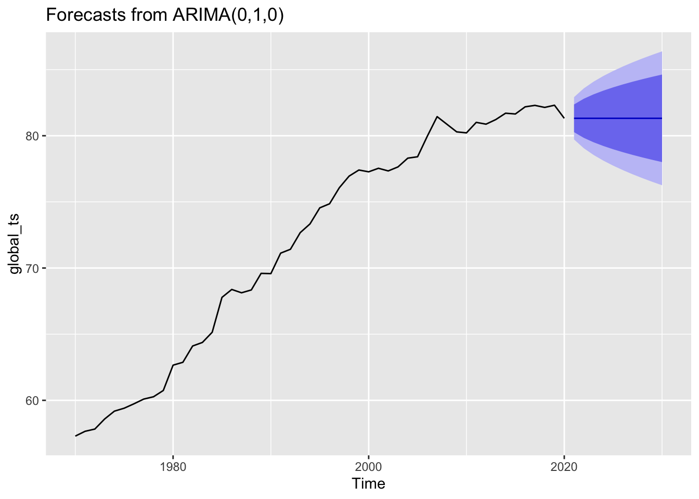
Forecast comparison
autoplot(global_ts) +
autolayer(meanf(global_ts, h=11),
series="Mean", PI=FALSE) +
autolayer(naive(global_ts, h=11),
series="Naïve", PI=FALSE) +
autolayer(snaive(global_ts, h=11),
series="Seasonal naïve", PI=FALSE) +
autolayer(forecast(fit, h=11),
series="Fit", PI=FALSE) +
ggtitle("Forecasts for yearly globalization metric") +
xlab("Year") + ylab("KOF Index") +
guides(colour=guide_legend(title="Forecast"))
Thus, from the ARIMA procedure, we found that our manual ARIMA approach was more effective in finding the model with the best AIC and BIC values than auto.arima(). From the forecast, we can clearly see that while globalization has been on an upward trend, it is predicted to level out in the next year. While this prediction is not promising, it does perform better than out benchmark fits.
Korean Tourism
In order to understand globalization within the USA through the lens on South Korea, we will need to also look at the tourism coming into SK from abroad. An example of this is using monthly air travel passeneger data into Incheon Airport, South Korea’s largest international airport. Specifically, we’ll be focusing on the number of passengers from international flights coming into South Korea for tourism as they best represent foreign interest of the nation.
From our Exploratory Data Analysis, we noticed the following information:
- Prior to differencing, the ACF plot show several lags above the significance bands, indicating a non-stationary relationship.
- Season + First Differencing resulted in the data being stationary.
From these plots, we can say that q = 2, p = 2, 4, d = 1, Q = 1, and P = 1.
Code
sk_passengers <- read_xlsx('raw_data/sk_passenger_arrivals.xlsx')
sk_passengers <- sk_passengers %>%
unite(date, year, month, sep = '-') %>%
mutate(date = as.Date(paste(date, '01', sep = '-'))) %>%
filter(year(date) < 2020) #In order to avoid the anomaly of the 2020 pandemic
air_travel_ts <- ts(sk_passengers$Passengers, start = c(2010, 10),
frequency = 12)
ggAcf(air_travel_ts %>% diff() %>% diff(12), lag.max = 30, main="Seasonal Differenced + First Differenced ACF")
Code
ggPacf(air_travel_ts %>% diff() %>% diff(12), lag.max = 30, main="Seasonal Differenced + First Differenced PACF")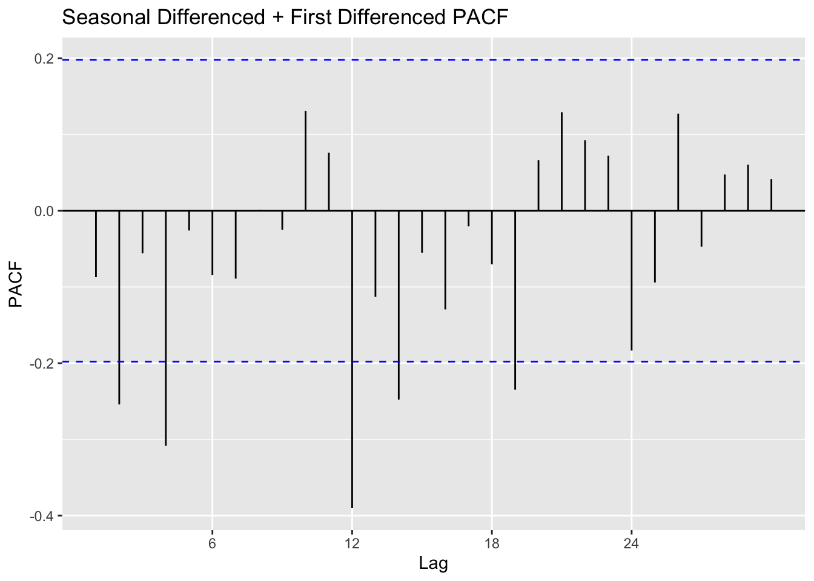
Moving on with model ARIMA(0,1,2)x(0,1,1)[12] due to the lowest AIC, AICc, and BIC values.
Code
#write a function
SARIMA.c=function(p1,p2,q1,q2,P1,P2,Q1,Q2,data){
temp=c()
d=1
D=1
s=12
i=1
temp= data.frame()
ls=matrix(rep(NA,9*35),nrow=35)
for (p in p1:p2)
{
for(q in q1:q2)
{
for(P in P1:P2)
{
for(Q in Q1:Q2)
{
if(p+d+q+P+D+Q<=9)
{
model<- Arima(data,order=c(p-1,d,q-1),seasonal=c(P-1,D,Q-1))
ls[i,]= c(p-1,d,q-1,P-1,D,Q-1,model$aic,model$bic,model$aicc)
i=i+1
}
}
}
}
}
temp= as.data.frame(ls)
names(temp)= c("p","d","q","P","D","Q","AIC","BIC","AICc")
temp
}
output=SARIMA.c(p1=1,p2=5,q1=1,q2=3,P1=1,P2=3,Q1=1,Q2=3,data=air_travel_ts)
knitr::kable(output)| p | d | q | P | D | Q | AIC | BIC | AICc |
|---|---|---|---|---|---|---|---|---|
| 0 | 1 | 0 | 0 | 1 | 0 | 2574.346 | 2576.931 | 2574.387 |
| 0 | 1 | 0 | 0 | 1 | 1 | 2546.796 | 2551.966 | 2546.922 |
| 0 | 1 | 0 | 0 | 1 | 2 | 2548.444 | 2556.199 | 2548.700 |
| 0 | 1 | 0 | 1 | 1 | 0 | 2556.745 | 2561.915 | 2556.871 |
| 0 | 1 | 0 | 1 | 1 | 1 | 2548.420 | 2556.174 | 2548.675 |
| 0 | 1 | 0 | 1 | 1 | 2 | 2550.394 | 2560.734 | 2550.824 |
| 0 | 1 | 0 | 2 | 1 | 0 | 2552.772 | 2560.527 | 2553.028 |
| 0 | 1 | 0 | 2 | 1 | 1 | 2550.382 | 2560.722 | 2550.812 |
| 0 | 1 | 1 | 0 | 1 | 0 | 2574.807 | 2579.977 | 2574.933 |
| 0 | 1 | 1 | 0 | 1 | 1 | 2543.326 | 2551.081 | 2543.581 |
| 0 | 1 | 1 | 0 | 1 | 2 | 2545.179 | 2555.519 | 2545.609 |
| 0 | 1 | 1 | 1 | 1 | 0 | 2555.892 | 2563.646 | 2556.147 |
| 0 | 1 | 1 | 1 | 1 | 1 | 2545.173 | 2555.513 | 2545.603 |
| 0 | 1 | 1 | 2 | 1 | 0 | 2549.534 | 2559.874 | 2549.964 |
| 0 | 1 | 2 | 0 | 1 | 0 | 2562.654 | 2570.409 | 2562.910 |
| 0 | 1 | 2 | 0 | 1 | 1 | 2533.345 | 2543.685 | 2533.775 |
| 0 | 1 | 2 | 1 | 1 | 0 | 2538.189 | 2548.528 | 2538.619 |
| 1 | 1 | 0 | 0 | 1 | 0 | 2575.603 | 2580.773 | 2575.729 |
| 1 | 1 | 0 | 0 | 1 | 1 | 2546.295 | 2554.050 | 2546.551 |
| 1 | 1 | 0 | 0 | 1 | 2 | 2547.917 | 2558.257 | 2548.347 |
| 1 | 1 | 0 | 1 | 1 | 0 | 2557.701 | 2565.456 | 2557.956 |
| 1 | 1 | 0 | 1 | 1 | 1 | 2547.901 | 2558.241 | 2548.332 |
| 1 | 1 | 0 | 2 | 1 | 0 | 2552.662 | 2563.002 | 2553.092 |
| 1 | 1 | 1 | 0 | 1 | 0 | 2562.140 | 2569.895 | 2562.395 |
| 1 | 1 | 1 | 0 | 1 | 1 | 2535.527 | 2545.867 | 2535.957 |
| 1 | 1 | 1 | 1 | 1 | 0 | 2544.476 | 2554.816 | 2544.907 |
| 1 | 1 | 2 | 0 | 1 | 0 | 2562.137 | 2572.477 | 2562.567 |
| 2 | 1 | 0 | 0 | 1 | 0 | 2571.112 | 2578.867 | 2571.368 |
| 2 | 1 | 0 | 0 | 1 | 1 | 2541.018 | 2551.358 | 2541.448 |
| 2 | 1 | 0 | 1 | 1 | 0 | 2549.599 | 2559.939 | 2550.029 |
| 2 | 1 | 1 | 0 | 1 | 0 | 2562.815 | 2573.155 | 2563.245 |
| 3 | 1 | 0 | 0 | 1 | 0 | 2572.829 | 2583.169 | 2573.260 |
| NA | NA | NA | NA | NA | NA | NA | NA | NA |
| NA | NA | NA | NA | NA | NA | NA | NA | NA |
| NA | NA | NA | NA | NA | NA | NA | NA | NA |
Code
output[which.min(output$AIC),] p d q P D Q AIC BIC AICc
16 0 1 2 0 1 1 2533.345 2543.685 2533.775Code
output[which.min(output$BIC),] p d q P D Q AIC BIC AICc
16 0 1 2 0 1 1 2533.345 2543.685 2533.775Code
output[which.min(output$AICc),] p d q P D Q AIC BIC AICc
16 0 1 2 0 1 1 2533.345 2543.685 2533.775Code
auto.arima(air_travel_ts)Series: air_travel_ts
ARIMA(1,0,2)(0,1,1)[12] with drift
Coefficients:
ar1 ma1 ma2 sma1 drift
0.9237 -0.2131 -0.3902 -0.643 15395.577
s.e. 0.0849 0.1440 0.1448 0.116 1712.498
sigma^2 = 8.595e+09: log likelihood = -1273.56
AIC=2559.12 AICc=2560.03 BIC=2574.69This model seems to be a goof fit for a number of reasons. Primarily, the ACF plot shows almost no correlation, indicating that the model has harnessed everything that left is white noise. This indicates a good model fit. Additionally, the Ljung-Box statistic shows almost no autocorrelation within the model. Lastly, all coefficients within the table are significant.
\[\begin{align} (1 - \beta)(1 - \beta^{12}) (Y_t - \mu) = (1 + 0.2648\beta + 0.4423\beta^2)(1 - 0.6406\beta^{12}) \epsilon_t \end{align}\]
Code
set.seed(123)
model_output <- capture.output(sarima(air_travel_ts, 0,1,2,0,1,1,12))
Code
cat(model_output[28:60], model_output[length(model_output)], sep = "\n") arima(x = xdata, order = c(p, d, q), seasonal = list(order = c(P, D, Q), period = S),
include.mean = !no.constant, transform.pars = trans, fixed = fixed, optim.control = list(trace = trc,
REPORT = 1, reltol = tol))
Coefficients:
ma1 ma2 sma1
-0.2648 -0.4423 -0.6406
s.e. 0.1007 0.1129 0.1102
sigma^2 estimated as 8.456e+09: log likelihood = -1262.67, aic = 2533.34
$degrees_of_freedom
[1] 95
$ttable
Estimate SE t.value p.value
ma1 -0.2648 0.1007 -2.6304 1e-02
ma2 -0.4423 0.1129 -3.9182 2e-04
sma1 -0.6406 0.1102 -5.8147 0e+00
$AIC
[1] 25.85046
$AICc
[1] 25.85306
$BIC
[1] 25.95596
NA
NA
NA
NACode
fit <- Arima(air_travel_ts, order=c(0,1,2), seasonal=c(0,1,1))
summary(fit)Series: air_travel_ts
ARIMA(0,1,2)(0,1,1)[12]
Coefficients:
ma1 ma2 sma1
-0.2648 -0.4423 -0.6406
s.e. 0.1007 0.1129 0.1102
sigma^2 = 8.723e+09: log likelihood = -1262.67
AIC=2533.34 AICc=2533.77 BIC=2543.68
Training set error measures:
ME RMSE MAE MPE MAPE MASE ACF1
Training set 5517.28 86406.29 53391.3 0.1750992 2.484263 0.2762785 -0.003659363Code
sarima.for(air_travel_ts, 60, 0,1,2,0,1,1,12)
$pred
Jan Feb Mar Apr May Jun Jul Aug Sep
2020 3207700 3088739 3137521 3008503 3023479 3065866 3158244 3455060 2971110
2021 3374324 3265209 3313992 3184974 3199950 3242337 3334714 3631530 3147581
2022 3550794 3441680 3490462 3361444 3376420 3418807 3511185 3808001 3324051
2023 3727265 3618150 3666933 3537915 3552891 3595278 3687655 3984471 3500522
2024 3903735 3794621 3843403 3714385 3729362 3771748 3864126 4160942 3676993
Oct Nov Dec
2020 3198943 2994382 3202800
2021 3375414 3170853 3379270
2022 3551884 3347324 3555741
2023 3728355 3523794 3732212
2024 3904825 3700265 3908682
$se
Jan Feb Mar Apr May Jun Jul
2020 91967.55 114150.96 117287.13 120341.60 123320.43 126228.99 129072.02
2021 154564.85 162841.24 166909.38 170880.70 174761.80 178558.55 182276.24
2022 211638.14 220236.97 225053.12 229768.35 234388.73 238919.78 243366.49
2023 276140.40 285028.51 290476.20 295823.59 301076.02 306238.37 311315.13
2024 347172.02 356339.34 362340.94 368244.73 374055.36 379777.09 385413.89
Aug Sep Oct Nov Dec
2020 131853.76 134579.14 137250.48 139869.37 142440.11
2021 185919.60 189494.86 193004.62 196448.48 199833.00
2022 247733.39 252026.94 256249.62 260399.76 264484.79
2023 316310.42 321230.51 326077.61 330849.20 335552.95
2024 390969.43 396449.67 401856.51 407186.86 412448.32Similar to out globalization index, we can see that the manual approach to find the best model was better than auto.arima() since the resulting model had a better AIC, BIC, AICc values. Our forecast shows a positive upwards trend in international passenger arrivals into Incheon Airport, South Korea. Please note, this forecast shows five years into the future if the COVID-19 pandemic didn’t cause any anomalies within air travel. However, even knowing that the actual data isn’t the same, we can approximate that the travel industry would recover in a similar pattern, with a positive trend of people coming into Korea. Thus, this furthers the narrative of globalization, and specifically, Korean culture reaching outside its country’s borders into the West.
Forecasting HYBE
As we’ve seen thus far, BTS, a group under HYBE, seems to have far better success than other KPOP groups in the West. However, with their recent announcement of mandatory military enlightment, we want to see how HYBE stock will forecast in the coming months.
From our Exploratory Data Analysis, we noticed the following information:
- Prior to differencing, the ACF plot show several lags above the significance bands, indicating a non-stationary relationship.
- Second Differencing resulted in the data being stationary.
Code
options("getSymbols.warning4.0"=FALSE)
options("getSymbols.yahoo.warning"=FALSE)
name <- getSymbols('352820.KS', from = "2019-01-01", to = "2023-09-01")
HYBE <- data.frame(`352820.KS`$`352820.KS.Adjusted`)
HYBE <- HYBE %>%
rownames_to_column(var = "Date") %>%
mutate(Date = as.Date(Date)) %>%
rename(Price = X352820.KS.Adjusted) %>%
mutate(Price = Price/1352.60)
start_date <- as.Date("2020-10-15")
end_date <- as.Date("2023-09-01")
all_dates <- data.frame(Date = seq(start_date, end_date, by = "days"))
merged_data <- all_dates %>%
left_join(HYBE, by = "Date")
imputed_time_series <- na_ma(merged_data, k = 4, weighting = "exponential")
df_HYBE <-data.frame(imputed_time_series)
df_HYBE$Date <-as.Date(df_HYBE$Date,format = "%Y-%m-%d")
write.csv(df_HYBE, 'cleaned_data/HYBE_cleaned_data.csv')
# Create time series
HYBE_ts <-ts(df_HYBE$Price, star=decimal_date(as.Date("2020-10-15", format = "%Y-%m-%d")), frequency = 365.25)
ggAcf(diff(diff(HYBE_ts)), lag.max = 30, main="Second Differenced Data")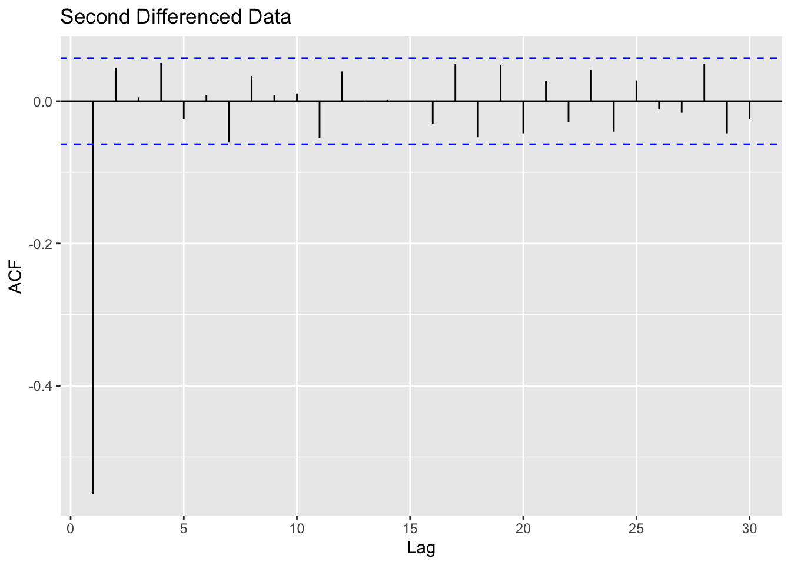
Code
ggPacf(diff(diff(HYBE_ts)), lag.max = 30, main="Second Differenced Data")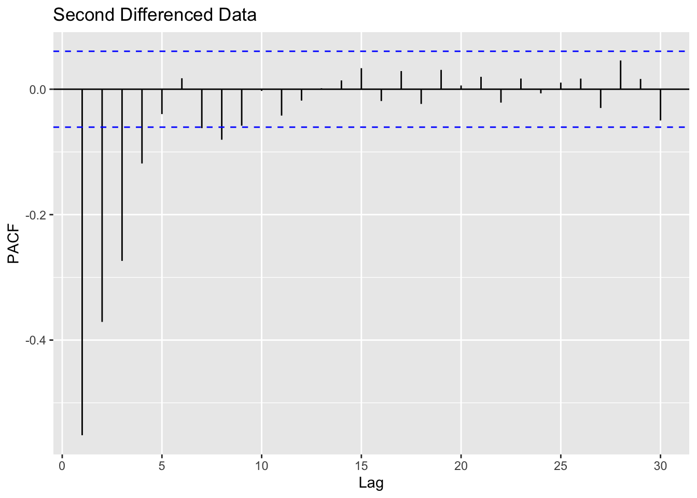
Thus, we can easily view that the best model has values p=1,2,3,4, d=2, and q=1.
ARIMA Model
set.seed(123)
d=2
i=1
temp= data.frame()
ls=matrix(rep(NA,6*25),nrow=25) # roughly nrow = 5x2 (see below)
for (p in 0:4)# p=0,1,2,3,4 : 5
{
for(q in 0:4)# q=0,1,2,3,4 :5
{
model<- Arima(HYBE_ts,order=c(p,d,q),include.drift=TRUE)
ls[i,]= c(p,d,q,model$aic,model$bic,model$aicc)
i=i+1
}
}
temp= as.data.frame(ls)
names(temp)= c("p","d","q","AIC","BIC","AICc")
#temp
knitr::kable(temp)| p | d | q | AIC | BIC | AICc |
|---|---|---|---|---|---|
| 0 | 2 | 0 | 6982.671 | 6987.627 | 6982.674 |
| 0 | 2 | 1 | 6187.644 | 6197.557 | 6187.655 |
| 0 | 2 | 2 | 6171.510 | 6186.380 | 6171.533 |
| 0 | 2 | 3 | 6171.986 | 6191.812 | 6172.024 |
| 0 | 2 | 4 | 6159.904 | 6184.687 | 6159.962 |
| 1 | 2 | 0 | 6580.752 | 6590.665 | 6580.764 |
| 1 | 2 | 1 | 6170.835 | 6185.705 | 6170.858 |
| 1 | 2 | 2 | 6172.771 | 6192.597 | 6172.809 |
| 1 | 2 | 3 | 6153.603 | 6178.386 | 6153.660 |
| 1 | 2 | 4 | 6148.585 | 6178.324 | 6148.665 |
| 2 | 2 | 0 | 6400.415 | 6415.284 | 6400.438 |
| 2 | 2 | 1 | 6172.696 | 6192.522 | 6172.734 |
| 2 | 2 | 2 | 6174.707 | 6199.490 | 6174.764 |
| 2 | 2 | 3 | 6145.000 | 6174.739 | 6145.080 |
| 2 | 2 | 4 | 6157.536 | 6192.232 | 6157.643 |
| 3 | 2 | 0 | 6284.770 | 6304.596 | 6284.808 |
| 3 | 2 | 1 | 6167.969 | 6192.752 | 6168.027 |
| 3 | 2 | 2 | 6154.270 | 6184.009 | 6154.350 |
| 3 | 2 | 3 | 6146.663 | 6181.359 | 6146.771 |
| 3 | 2 | 4 | 6148.430 | 6188.082 | 6148.568 |
| 4 | 2 | 0 | 6249.636 | 6274.419 | 6249.693 |
| 4 | 2 | 1 | 6149.162 | 6178.902 | 6149.243 |
| 4 | 2 | 2 | 6148.763 | 6183.459 | 6148.871 |
| 4 | 2 | 3 | 6145.582 | 6185.235 | 6145.721 |
| 4 | 2 | 4 | 6148.262 | 6192.871 | 6148.435 |
[1] "AIC:" p d q AIC BIC AICc
14 2 2 3 6145 6174.739 6145.08[1] "BIC:" p d q AIC BIC AICc
14 2 2 3 6145 6174.739 6145.08[1] "AICc:" p d q AIC BIC AICc
14 2 2 3 6145 6174.739 6145.08From the results of the sarima() function, we call say that the equation is as follows:
\[\begin{align} (1 - 0.9590\beta - 0.4301\beta^2)(1 - \beta)(1 - \beta)^2 (Y_t - \mu) = (1 - 2.1072\beta - 1.7438\beta^2 + 0.6367\beta^3) \epsilon_t \end{align}\]
Code
sarima(HYBE_ts, 2, 2, 3)initial value 1.880363
iter 2 value 1.610573
iter 3 value 1.555588
iter 4 value 1.512648
iter 5 value 1.499312
iter 6 value 1.498926
iter 7 value 1.484784
iter 8 value 1.484493
iter 9 value 1.482695
iter 10 value 1.481167
iter 11 value 1.479415
iter 12 value 1.477000
iter 13 value 1.476956
iter 14 value 1.476423
iter 15 value 1.476362
iter 16 value 1.475924
iter 17 value 1.475538
iter 18 value 1.474620
iter 19 value 1.474155
iter 20 value 1.473996
iter 21 value 1.473759
iter 22 value 1.472429
iter 23 value 1.471332
iter 24 value 1.471020
iter 25 value 1.470937
iter 26 value 1.470912
iter 26 value 1.470912
iter 26 value 1.470912
final value 1.470912
converged
initial value 1.519754
iter 2 value 1.518900
iter 3 value 1.518591
iter 4 value 1.518230
iter 5 value 1.518156
iter 6 value 1.518064
iter 7 value 1.517408
iter 8 value 1.516749
iter 9 value 1.516542
iter 10 value 1.516436
iter 11 value 1.516428
iter 12 value 1.516427
iter 13 value 1.516426
iter 14 value 1.516421
iter 15 value 1.516405
iter 16 value 1.516357
iter 17 value 1.516195
iter 18 value 1.516146
iter 19 value 1.515889
iter 20 value 1.510953
iter 21 value 1.510235
iter 22 value 1.509575
iter 23 value 1.509461
iter 24 value 1.509223
iter 25 value 1.509217
iter 26 value 1.508651
iter 27 value 1.508339
iter 28 value 1.505149
iter 29 value 1.504269
iter 30 value 1.503381
iter 31 value 1.503362
iter 32 value 1.503153
iter 33 value 1.503101
iter 34 value 1.503013
iter 35 value 1.502679
iter 36 value 1.502227
iter 37 value 1.501994
iter 38 value 1.501889
iter 39 value 1.501847
iter 40 value 1.501824
iter 41 value 1.501785
iter 42 value 1.501696
iter 43 value 1.501653
iter 44 value 1.501639
iter 45 value 1.501631
iter 46 value 1.501621
iter 47 value 1.501615
iter 48 value 1.501591
iter 49 value 1.501567
iter 50 value 1.501546
iter 51 value 1.501539
iter 52 value 1.501538
iter 53 value 1.501538
iter 53 value 1.501538
final value 1.501538
converged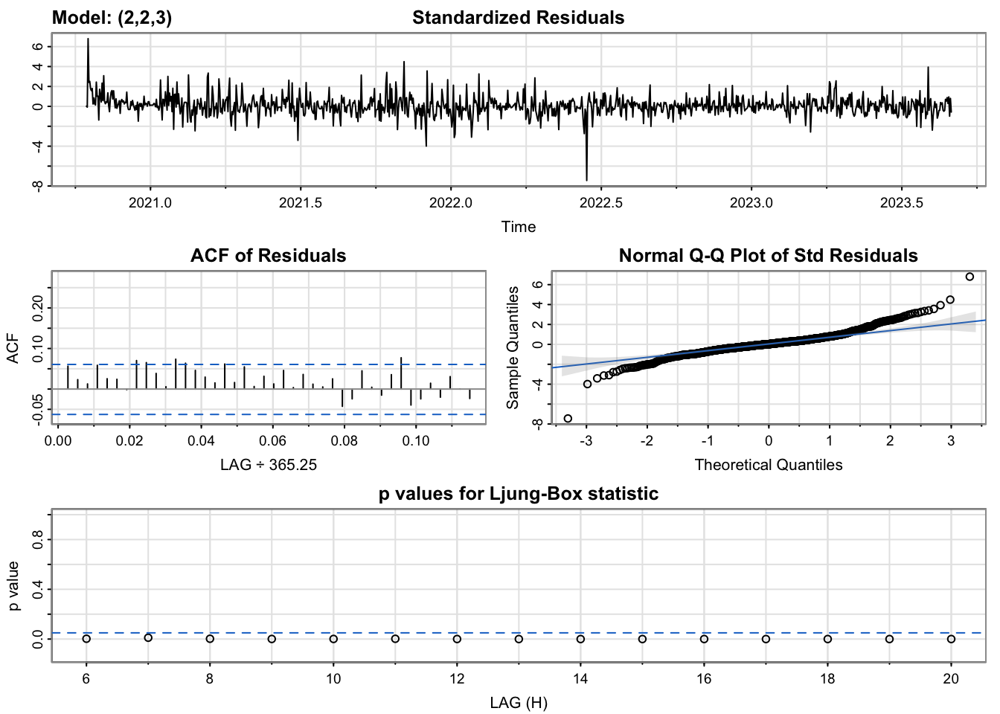
$fit
Call:
arima(x = xdata, order = c(p, d, q), seasonal = list(order = c(P, D, Q), period = S),
include.mean = !no.constant, transform.pars = trans, fixed = fixed, optim.control = list(trace = trc,
REPORT = 1, reltol = tol))
Coefficients:
ar1 ar2 ma1 ma2 ma3
0.9590 -0.4301 -2.1072 1.7438 -0.6367
s.e. 0.1001 0.0972 0.0854 0.1510 0.0827
sigma^2 estimated as 20.02: log likelihood = -3066.5, aic = 6145
$degrees_of_freedom
[1] 1045
$ttable
Estimate SE t.value p.value
ar1 0.9590 0.1001 9.5844 0
ar2 -0.4301 0.0972 -4.4274 0
ma1 -2.1072 0.0854 -24.6652 0
ma2 1.7438 0.1510 11.5461 0
ma3 -0.6367 0.0827 -7.6974 0
$AIC
[1] 5.852381
$AICc
[1] 5.852435
$BIC
[1] 5.880704auto.arima() concluded that ARIMA(4,1,2) is the best model. Comparing this to ARIMA(2,2,3), we can see that the AIC, BIC, and AICc values are much better. Additionally, the Ljung-Box statistic shows almost no autocorrelation within the model.
Code
auto.arima(HYBE_ts)Series: HYBE_ts
ARIMA(4,1,2)
Coefficients:
ar1 ar2 ar3 ar4 ma1 ma2
0.5128 -0.3245 0.0261 0.1057 -0.6561 0.4621
s.e. 0.1850 0.1143 0.0425 0.0470 0.1847 0.1224
sigma^2 = 20.05: log likelihood = -3063.9
AIC=6141.81 AICc=6141.92 BIC=6176.51Code
sarima(HYBE_ts, 4, 1, 2)initial value 1.479090
iter 2 value 1.463864
iter 3 value 1.458455
iter 4 value 1.458194
iter 5 value 1.458147
iter 6 value 1.458099
iter 7 value 1.457919
iter 8 value 1.457773
iter 9 value 1.457708
iter 10 value 1.457678
iter 11 value 1.457643
iter 12 value 1.457557
iter 13 value 1.457423
iter 14 value 1.457280
iter 15 value 1.457161
iter 16 value 1.457014
iter 17 value 1.456931
iter 18 value 1.456643
iter 19 value 1.456417
iter 20 value 1.456246
iter 21 value 1.456200
iter 22 value 1.456159
iter 23 value 1.456061
iter 24 value 1.455849
iter 25 value 1.455620
iter 26 value 1.455431
iter 27 value 1.455340
iter 28 value 1.455306
iter 29 value 1.455214
iter 30 value 1.455065
iter 31 value 1.454969
iter 32 value 1.454968
iter 33 value 1.454953
iter 34 value 1.454952
iter 35 value 1.454951
iter 36 value 1.454951
iter 37 value 1.454951
iter 38 value 1.454950
iter 39 value 1.454950
iter 40 value 1.454950
iter 40 value 1.454950
iter 40 value 1.454950
final value 1.454950
converged
initial value 1.496594
iter 2 value 1.496445
iter 3 value 1.496373
iter 4 value 1.496366
iter 5 value 1.496333
iter 6 value 1.496325
iter 7 value 1.496295
iter 8 value 1.496290
iter 9 value 1.496289
iter 10 value 1.496289
iter 11 value 1.496288
iter 12 value 1.496288
iter 13 value 1.496287
iter 14 value 1.496287
iter 15 value 1.496287
iter 15 value 1.496287
iter 15 value 1.496287
final value 1.496287
converged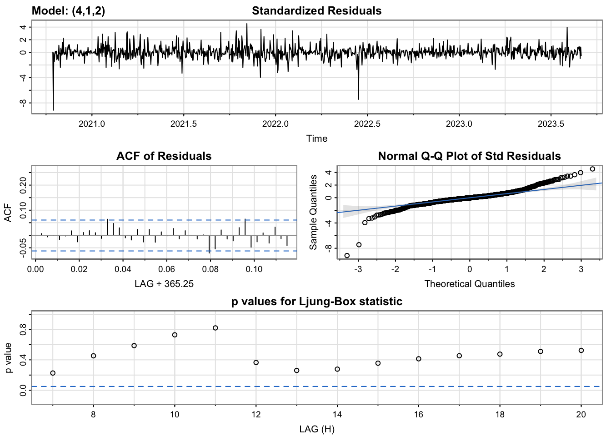
$fit
Call:
arima(x = xdata, order = c(p, d, q), seasonal = list(order = c(P, D, Q), period = S),
xreg = constant, transform.pars = trans, fixed = fixed, optim.control = list(trace = trc,
REPORT = 1, reltol = tol))
Coefficients:
ar1 ar2 ar3 ar4 ma1 ma2 constant
0.5115 -0.3241 0.0261 0.1060 -0.6549 0.4616 -0.0125
s.e. 0.1843 0.1144 0.0425 0.0468 0.1840 0.1225 0.1632
sigma^2 estimated as 19.93: log likelihood = -3063.9, aic = 6143.8
$degrees_of_freedom
[1] 1044
$ttable
Estimate SE t.value p.value
ar1 0.5115 0.1843 2.7753 0.0056
ar2 -0.3241 0.1144 -2.8337 0.0047
ar3 0.0261 0.0425 0.6149 0.5388
ar4 0.1060 0.0468 2.2623 0.0239
ma1 -0.6549 0.1840 -3.5602 0.0004
ma2 0.4616 0.1225 3.7679 0.0002
constant -0.0125 0.1632 -0.0769 0.9387
$AIC
[1] 5.845674
$AICc
[1] 5.845776
$BIC
[1] 5.88341Forecasting
fit <- Arima(HYBE_ts, order=c(4, 1, 2))
autoplot(forecast(fit, h = 365))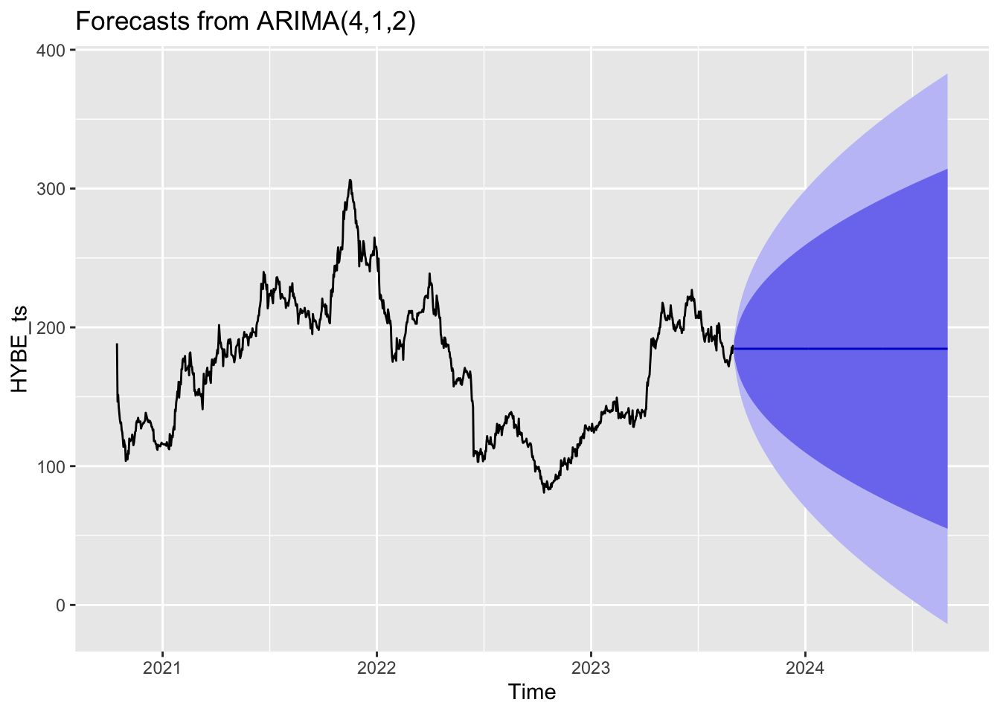
Forecast comparison
autoplot(HYBE_ts) +
autolayer(meanf(HYBE_ts, h=365),
series="Mean", PI=FALSE) +
autolayer(naive(HYBE_ts, h=365),
series="Naïve", PI=FALSE) +
autolayer(snaive(HYBE_ts, h=365),
series="Seasonal naïve", PI=FALSE) +
autolayer(forecast(fit, h=365),
series="Fit", PI=FALSE) +
ggtitle("Forecasts for HYBE Stock Price") +
xlab("Year") + ylab("Price (USD)") +
guides(colour=guide_legend(title="Forecast"))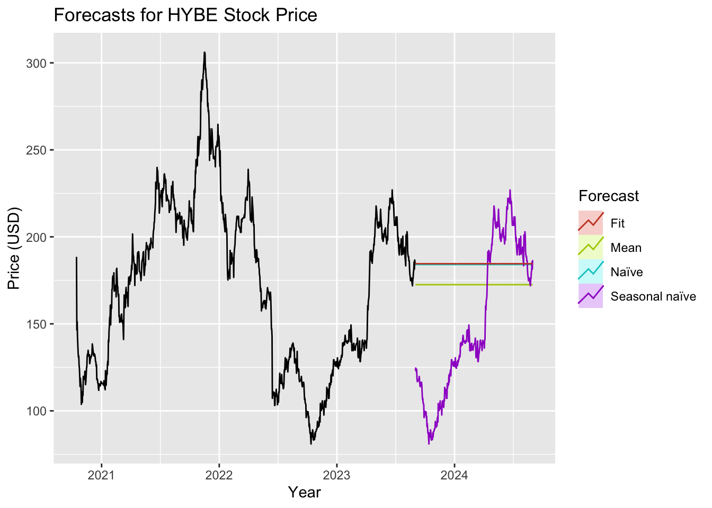
From the manual approach, we can also say that the ACF plot of residuals shows no significance, meaning the residuals are not correlated. Additionally, the p-values of the Ljung-Box statistic is on the lower side, however, we will continue and see whether auto.arima() creates a better model. Thus, after forecasting ARIMA(4,1,2), we can see that the forecast predicts a consistent stock price for the next year. Obviously, this doesn’t seem feasible, as stock prices are constantly changing. However, what this does tell us is that there isn’t an immediate positive trend in HYBE stock to say that the prediction would be upward. Therefore, we’ll move forward and see how other KPOP labels and Western record labels may effect volitilaty and unpredictability of HYBE’s future.
Popularity: KPOP
In order to get a better understanding of the popularity of KPOP as the years progress, we will create a ARMA model to forecast.
From our Exploratory Data Analysis, we noticed the following information:
- Our original data, when plotted in an ACF and PACF plot, returned lags well within the significance bounds, meaning that the data was stationary without differencing.
Code
kpop_data <- read.csv("cleaned_data/kpop_popularity.csv")
kpop_ts <- ts(kpop_data$popularity, frequency = 1)
ggAcf(kpop_ts)+ggtitle("ACF Plot for Popularity Score of KPOP Artists")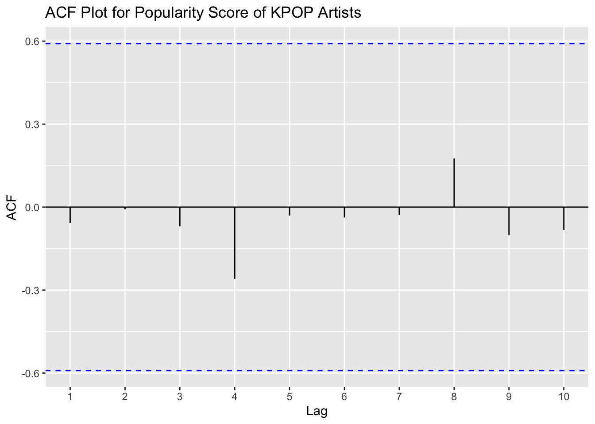
Code
ggPacf(kpop_ts)+ggtitle("PACF Plot for Popularity Score of KPOP Artists")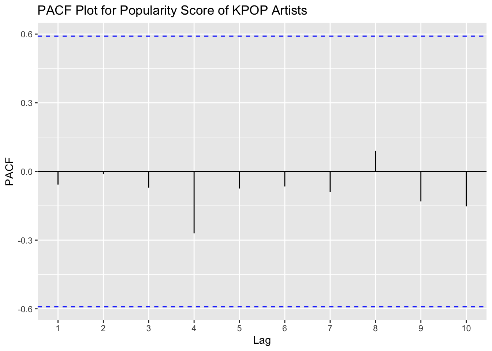
Code
set.seed(123)
d=1
i=1
temp= data.frame()
ls=matrix(rep(NA,6*25),nrow=25) # roughly nrow = 5x2 (see below)
for (p in 0:4)# p=0,1,2,3,4 : 5
{
for(q in 0:4)# q=0,1,2,3,4 :5
{
model<- Arima(kpop_ts,order=c(p,d,q),include.drift=TRUE)
ls[i,]= c(p,d,q,model$aic,model$bic,model$aicc)
i=i+1
}
}
temp= as.data.frame(ls)
names(temp)= c("p","d","q","AIC","BIC","AICc")
#temp
knitr::kable(temp)| p | d | q | AIC | BIC | AICc |
|---|---|---|---|---|---|
| 0 | 1 | 0 | 49.25426 | 49.85943 | 50.96855 |
| 0 | 1 | 1 | 50.69858 | 51.60633 | 54.69858 |
| 0 | 1 | 2 | 50.96325 | 52.17359 | 58.96325 |
| 0 | 1 | 3 | 52.95931 | 54.47224 | 67.95931 |
| 0 | 1 | 4 | 54.57435 | 56.38987 | 82.57435 |
| 1 | 1 | 0 | 50.45102 | 51.35877 | 54.45102 |
| 1 | 1 | 1 | 52.45087 | 53.66121 | 60.45087 |
| 1 | 1 | 2 | 52.95694 | 54.46986 | 67.95694 |
| 1 | 1 | 3 | 54.94709 | 56.76260 | 82.94709 |
| 1 | 1 | 4 | 56.18532 | 58.30342 | 112.18532 |
| 2 | 1 | 0 | 52.45052 | 53.66086 | 60.45052 |
| 2 | 1 | 1 | 54.42260 | 55.93553 | 69.42260 |
| 2 | 1 | 2 | 54.87166 | 56.68717 | 82.87166 |
| 2 | 1 | 3 | 56.86859 | 58.98668 | 112.86859 |
| 2 | 1 | 4 | 58.20413 | 60.62481 | 202.20413 |
| 3 | 1 | 0 | 53.73196 | 55.24488 | 68.73196 |
| 3 | 1 | 1 | 55.39449 | 57.21000 | 83.39449 |
| 3 | 1 | 2 | 56.22953 | 58.34762 | 112.22953 |
| 3 | 1 | 3 | 58.70529 | 61.12597 | 202.70529 |
| 3 | 1 | 4 | 59.37864 | 62.10191 | Inf |
| 4 | 1 | 0 | 54.28546 | 56.10097 | 82.28546 |
| 4 | 1 | 1 | 53.54694 | 55.66503 | 109.54694 |
| 4 | 1 | 2 | 53.47393 | 55.89461 | 197.47393 |
| 4 | 1 | 3 | 54.05722 | 56.78049 | Inf |
| 4 | 1 | 4 | 57.44305 | 60.46891 | -162.55695 |
[1] "AIC:" p d q AIC BIC AICc
1 0 1 0 49.25426 49.85943 50.96855[1] "BIC:" p d q AIC BIC AICc
1 0 1 0 49.25426 49.85943 50.96855[1] "AICc:" p d q AIC BIC AICc
25 4 1 4 57.44305 60.46891 -162.5569The resulting model is a constant function as a result of model selection. Unfortunelty, due to the lack of data points, we are unable to output the model diagnostics of the ARMA(0,0) model. Using the auto.arima() function, the equation for the model is written as follows.
\[\begin{align} x_{t} = w_{t} + 77.3352 \end{align}\]
The auto.arima() function confirms our ACF and PACF plots with the model ARIMA(0,0,0)
Code
auto.arima(kpop_ts)Series: kpop_ts
ARIMA(0,0,0) with non-zero mean
Coefficients:
mean
77.3352
s.e. 0.6089
sigma^2 = 4.486: log likelihood = -23.34
AIC=50.68 AICc=52.18 BIC=51.47Code
fit <- Arima(kpop_ts, order=c(0, 0, 0))
autoplot(forecast(fit))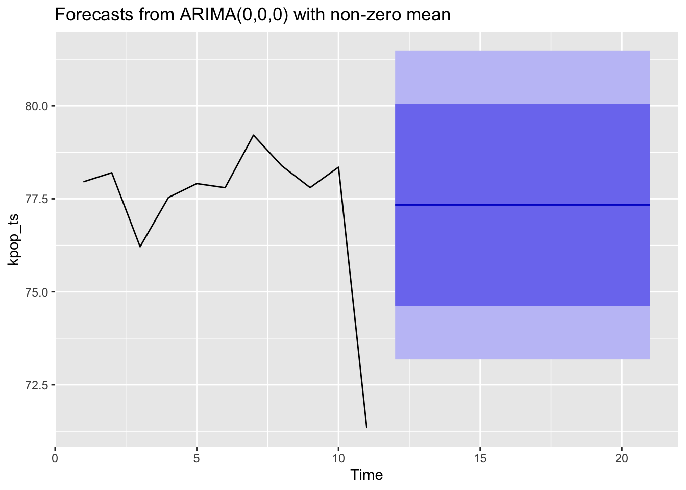
Code
autoplot(kpop_ts) +
autolayer(meanf(kpop_ts, h=11),
series="Mean", PI=FALSE) +
autolayer(naive(kpop_ts, h=11),
series="Naïve", PI=FALSE) +
autolayer(snaive(kpop_ts, h=11),
series="Seasonal naïve", PI=FALSE) +
autolayer(forecast(fit, h=11),
series="Fit", PI=FALSE) +
ggtitle("Forecasts for Yearly Average Popularity Score of KPOP Artists") +
xlab("Year") + ylab("Popularity Score") +
guides(colour=guide_legend(title="Forecast"))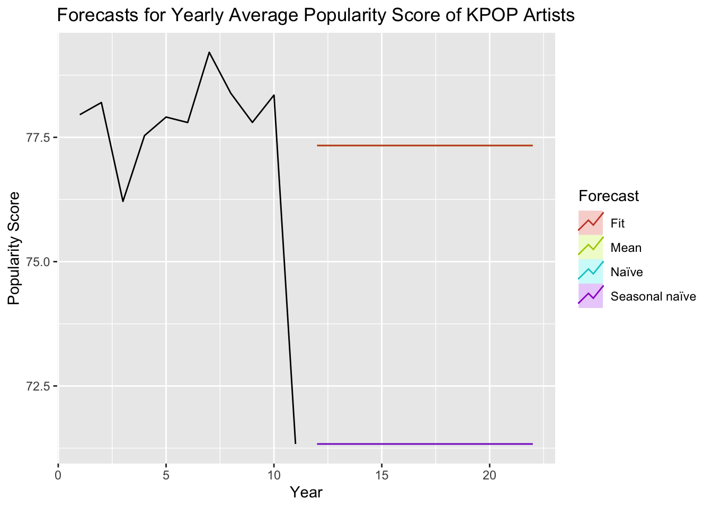
Since we cannot see any siginificant lags in the ACF and PACF, we’ll need to use a ARMA(0,0,0) model. However, running a manual and auto.arima() can help to decide the best approach. Through the manual approach, we found ARIMA(0,1,0) the best purely based on AIC and BIC. However, because this data cannot be differenced, ARIMA(0,0,0) is the best option, with auto.arima() solidfying this notion. As a result, the forecast is simply the mean value of the popularity, which is not a good indicator of the future forecast. The lack of data points unfortunelty prevented an in depth prediction, however, we can note that as as KPOP continues to be streamed, we will continue to see rising popularity.
Popularity: Western
In order to get a better understanding of the popularity of Western artists as the years progress, we will create an ARMA model to forecast. As a reminder, due to the new Spotify API regulations, popularity scores are not public for all songs. Therefore, to use the metric we’ve extrapolated and averaged the scores. For more details, please Data Visualizations.
From our Exploratory Data Analysis, we noticed the following information:
- Our original data, when plotted in an ACF and PACF plot, returned lags well within the significance bounds, meaning that the data was stationary without differencing.
Code
western_data <- read.csv("cleaned_data/western_popularity.csv")
western_ts <- ts(western_data$popularity, frequency = 1)
ggAcf(western_ts)+ggtitle("ACF Plot for Popularity Score of Western Artists")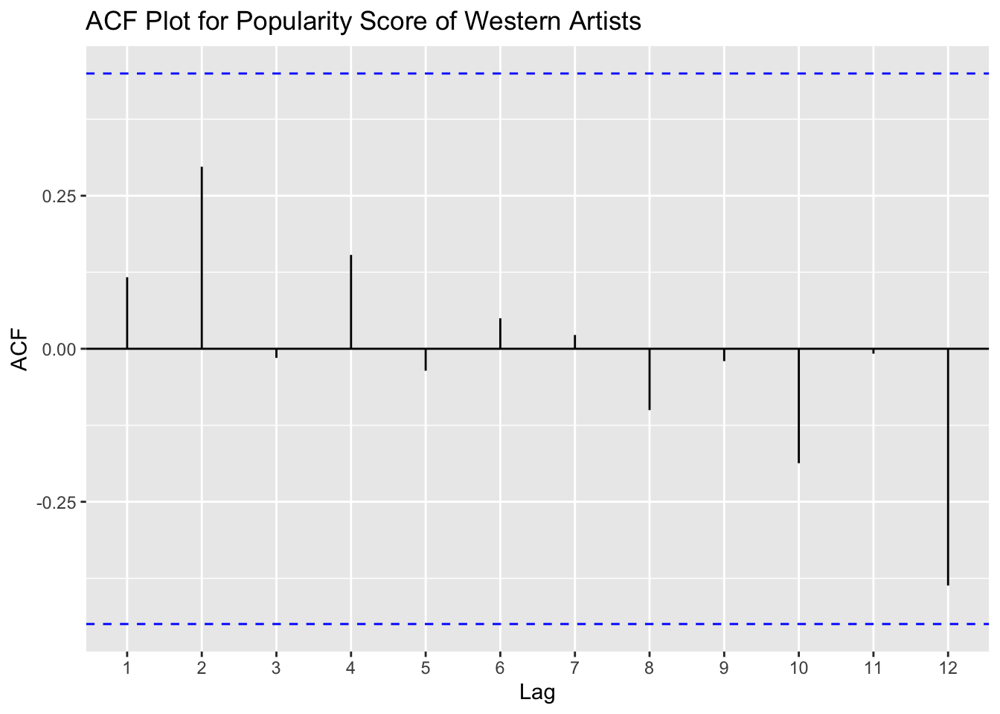
Code
ggPacf(western_ts)+ggtitle("PACF Plot for Popularity Score of Western Artists")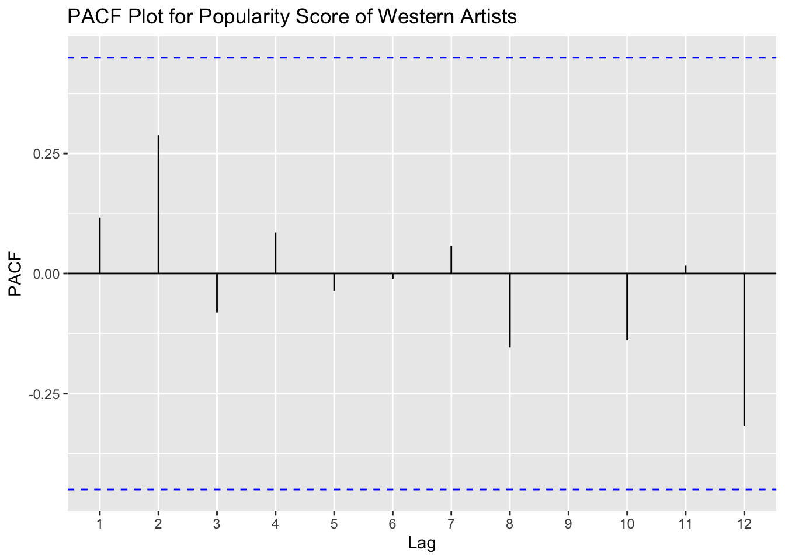
Code
set.seed(123)
d=1
i=1
temp= data.frame()
ls=matrix(rep(NA,6*25),nrow=25) # roughly nrow = 5x2 (see below)
for (p in 0:4)# p=0,1,2,3,4 : 5
{
for(q in 0:4)# q=0,1,2,3,4 :5
{
model<- Arima(western_ts,order=c(p,d,q),include.drift=TRUE)
ls[i,]= c(p,d,q,model$aic,model$bic,model$aicc)
i=i+1
}
}
temp= as.data.frame(ls)
names(temp)= c("p","d","q","AIC","BIC","AICc")
#temp
knitr::kable(temp)| p | d | q | AIC | BIC | AICc |
|---|---|---|---|---|---|
| 0 | 1 | 0 | 106.90663 | 108.68737 | 107.70663 |
| 0 | 1 | 1 | 96.30180 | 98.97291 | 98.01608 |
| 0 | 1 | 2 | 95.17216 | 98.73364 | 98.24908 |
| 0 | 1 | 3 | 96.62745 | 101.07931 | 101.62745 |
| 0 | 1 | 4 | 97.29443 | 102.63666 | 104.93079 |
| 1 | 1 | 0 | 99.67992 | 102.35104 | 101.39421 |
| 1 | 1 | 1 | 95.73620 | 99.29769 | 98.81312 |
| 1 | 1 | 2 | 97.26088 | 101.71274 | 102.26088 |
| 1 | 1 | 3 | 98.86247 | 104.20471 | 106.49884 |
| 1 | 1 | 4 | 98.51416 | 104.74676 | 109.71416 |
| 2 | 1 | 0 | 101.17692 | 104.73841 | 104.25384 |
| 2 | 1 | 1 | 97.72151 | 102.17337 | 102.72151 |
| 2 | 1 | 2 | 99.16036 | 104.50259 | 106.79673 |
| 2 | 1 | 3 | 99.21777 | 105.45037 | 110.41777 |
| 2 | 1 | 4 | 100.49013 | 107.61311 | 116.49013 |
| 3 | 1 | 0 | 100.24031 | 104.69217 | 105.24031 |
| 3 | 1 | 1 | 97.32806 | 102.67029 | 104.96442 |
| 3 | 1 | 2 | 96.57992 | 102.81252 | 107.77992 |
| 3 | 1 | 3 | 98.37224 | 105.49522 | 114.37224 |
| 3 | 1 | 4 | 100.26073 | 108.27407 | 122.76073 |
| 4 | 1 | 0 | 101.30634 | 106.64857 | 108.94270 |
| 4 | 1 | 1 | 98.48354 | 104.71614 | 109.68354 |
| 4 | 1 | 2 | 98.43794 | 105.56092 | 114.43794 |
| 4 | 1 | 3 | 100.18338 | 108.19673 | 122.68338 |
| 4 | 1 | 4 | 102.27088 | 111.17460 | 133.69945 |
[1] "AIC:" p d q AIC BIC AICc
3 0 1 2 95.17216 98.73364 98.24908[1] "BIC:" p d q AIC BIC AICc
3 0 1 2 95.17216 98.73364 98.24908[1] "AICc:" p d q AIC BIC AICc
2 0 1 1 96.3018 98.97291 98.01608The manual approach suggested the model ARIMA(0,1,2) based on the lowest AIC and BIC values. After running the model diagnostics, we have the following.
Code
sarima(western_ts, 0, 1, 2)initial value 1.439579
iter 2 value 1.295908
iter 3 value 1.290114
iter 4 value 1.273292
iter 5 value 1.261843
iter 6 value 1.257440
iter 7 value 1.255100
iter 8 value 1.254410
iter 9 value 1.253991
iter 10 value 1.253748
iter 11 value 1.253725
iter 12 value 1.253724
iter 12 value 1.253724
iter 12 value 1.253724
final value 1.253724
converged
initial value 1.175647
iter 2 value 1.170725
iter 3 value 1.141883
iter 4 value 1.140570
iter 5 value 1.053852
iter 6 value 1.029367
iter 7 value 1.018926
iter 8 value 1.003598
iter 9 value 1.002650
iter 10 value 1.002567
iter 11 value 1.002540
iter 12 value 1.002538
iter 13 value 1.002513
iter 14 value 1.002510
iter 15 value 1.002510
iter 15 value 1.002510
final value 1.002510
converged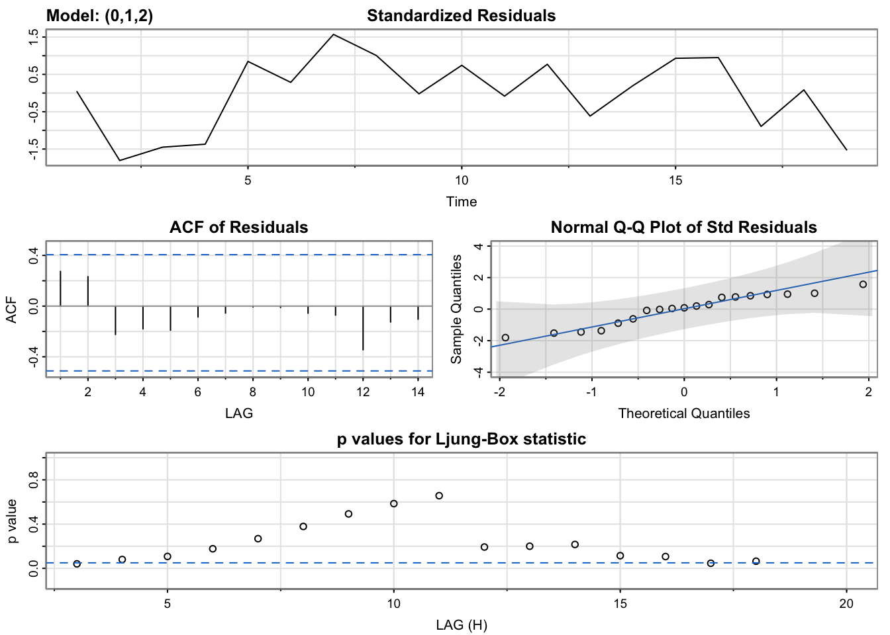
$fit
Call:
arima(x = xdata, order = c(p, d, q), seasonal = list(order = c(P, D, Q), period = S),
xreg = constant, transform.pars = trans, fixed = fixed, optim.control = list(trace = trc,
REPORT = 1, reltol = tol))
Coefficients:
ma1 ma2 constant
-1.7881 0.7881 0.3700
s.e. 1.0474 1.0258 0.0451
sigma^2 estimated as 5.166: log likelihood = -43.59, aic = 95.17
$degrees_of_freedom
[1] 15
$ttable
Estimate SE t.value p.value
ma1 -1.7881 1.0474 -1.7072 0.1084
ma2 0.7881 1.0258 0.7683 0.4542
constant 0.3700 0.0451 8.2083 0.0000
$AIC
[1] 5.287342
$AICc
[1] 5.38258
$BIC
[1] 5.485202Cross referencing with auto.arima() resulted in the model ARIMA(0,1,1). Through a model diagnostics analysis, we can see that while the AIC and BIC values are slightly higher, the Ljung-Box statistic p-values are much higher than the significance band, meaning that we fail to reject the null hypothesis and can say that the model is not autocorrelated. Therefore, we’ll move forward with this model.
\[\begin{align} (1 - B)(Y_t - \mu) = -0.7565 \epsilon_t \end{align}\]
Code
auto.arima(western_ts) #produced 0,1,1Series: western_ts
ARIMA(0,1,1)
Coefficients:
ma1
-0.7565
s.e. 0.1410
sigma^2 = 10.73: log likelihood = -46.81
AIC=97.62 AICc=98.42 BIC=99.4Code
sarima(western_ts, 0, 1, 1)initial value 1.439579
iter 2 value 1.273344
iter 3 value 1.260212
iter 4 value 1.254097
iter 5 value 1.254054
iter 6 value 1.253995
iter 6 value 1.253995
final value 1.253995
converged
initial value 1.177718
iter 2 value 1.172040
iter 3 value 1.143996
iter 4 value 1.131640
iter 5 value 1.094114
iter 6 value 1.089542
iter 7 value 1.089539
iter 8 value 1.089469
iter 9 value 1.089445
iter 9 value 1.089445
iter 9 value 1.089445
final value 1.089445
converged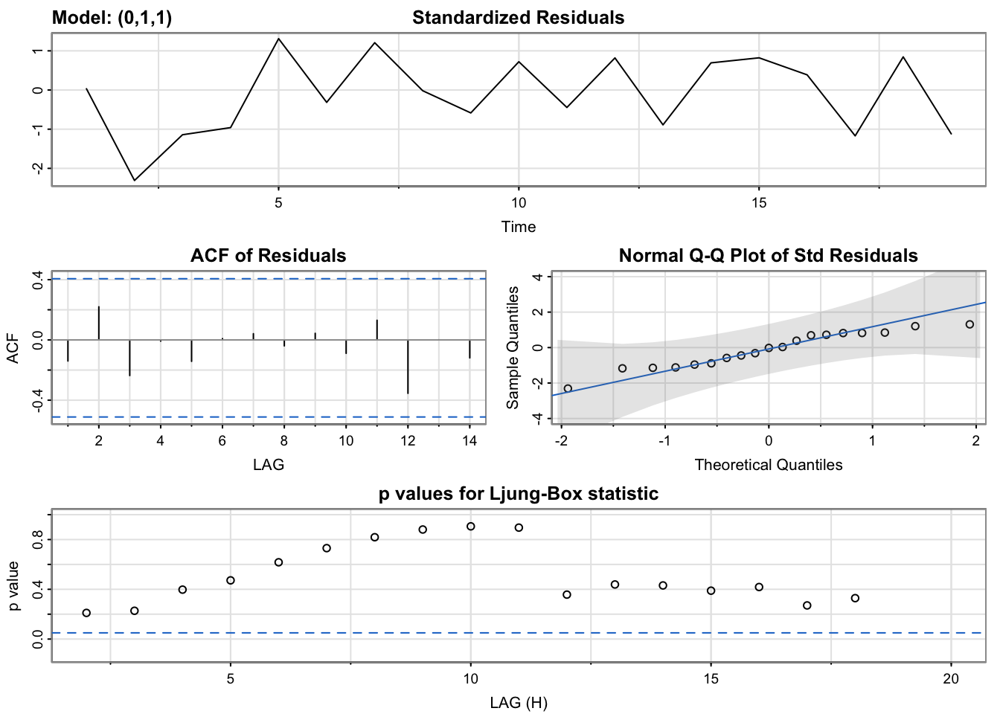
$fit
Call:
arima(x = xdata, order = c(p, d, q), seasonal = list(order = c(P, D, Q), period = S),
xreg = constant, transform.pars = trans, fixed = fixed, optim.control = list(trace = trc,
REPORT = 1, reltol = tol))
Coefficients:
ma1 constant
-1.0000 0.2980
s.e. 0.1482 0.1148
sigma^2 estimated as 7.503: log likelihood = -45.15, aic = 96.3
$degrees_of_freedom
[1] 16
$ttable
Estimate SE t.value p.value
ma1 -1.000 0.1482 -6.7491 0.0000
constant 0.298 0.1148 2.5964 0.0195
$AIC
[1] 5.3501
$AICc
[1] 5.394544
$BIC
[1] 5.498495Code
fit <- Arima(western_ts, order=c(0, 1, 1))
autoplot(forecast(fit))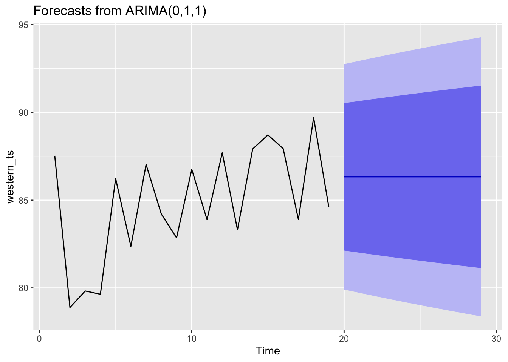
Code
autoplot(western_ts) +
autolayer(meanf(western_ts, h=11),
series="Mean", PI=FALSE) +
autolayer(naive(western_ts, h=11),
series="Naïve", PI=FALSE) +
autolayer(snaive(western_ts, h=11),
series="Seasonal naïve", PI=FALSE) +
autolayer(forecast(fit, h=11),
series="Fit", PI=FALSE) +
ggtitle("Forecasts for Yearly Average Popularity Score of Western Artists") +
xlab("Year") + ylab("Popularity Score") +
guides(colour=guide_legend(title="Forecast"))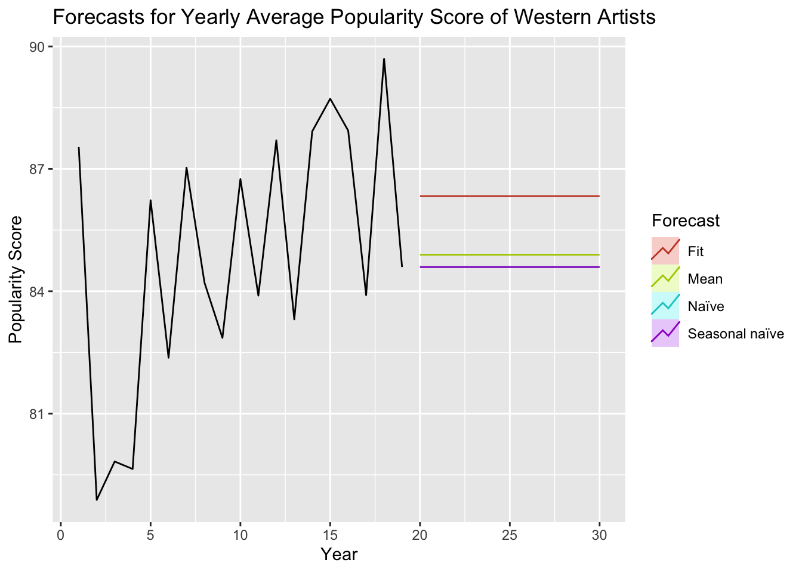
For Western artists we saw that auto.arima() found a better model than our manual approach. The forecast shows a constant metric for the popularity score. Unfortunelty, this model, like the popularity score for KPOP, was not able to meet benchmark standards, simply due to the lack of data points.
For future analysis of popularity, we must investigate another outlet as opposed to the Spotify metric due to the new API regulations. A different metric with a string database would allow us to properly predict popularity based on genre and artist. However, what we can say is that popularity for both Western and KPOP artists fluctuate. To further estimate popularity of an artists, we must try to look at their musical characteristics and how this can predict popularity in time.